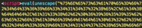

Another phishing landing obfuscation technique to discuss here is a custom character replacement that Proofpoint
researchers observed associated with an Apple Account phishing scheme. Initially we are presented with a page that
consists of two eval statements and two arrays at the end of the second eval statement. Looking closely at the array, it
appears that it could be useful in decoding.

Figure 22: The encoded phishing landing

Figure 23: The character key that exists at the end of the phishing landing

Figure 24: The unescaped content of the first unescape section in the encoded phishing landing
If we decode the first eval statement we observe that the JavaScript “unescape” variable is rewritten, so that when the
second section evals the code, it runs the “new unescape” rather than the normal JavaScript unescape command.
The first variable in the function is the code to deobfuscate, the second is the encoded characters, and the third is the
key. If the variables were rewritten to make more sense, the code would look something like this.

This is simply a character replace using a cipher that looks something like this:

When we replace these characters on the page, we are presented with a mostly-decoded page:

However, this page still contains some decimal and \u00 encoded strings on it.

The decimal-encoded strings follow (Fig. 29)